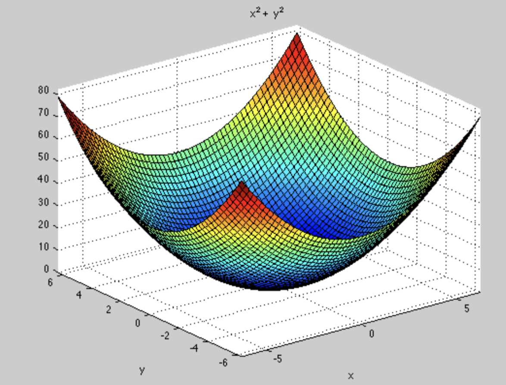
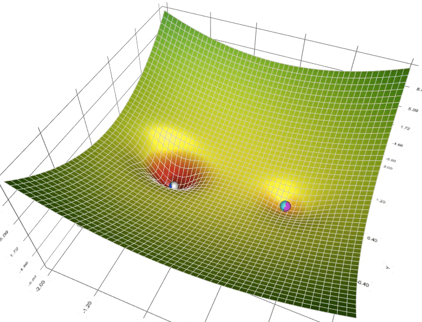
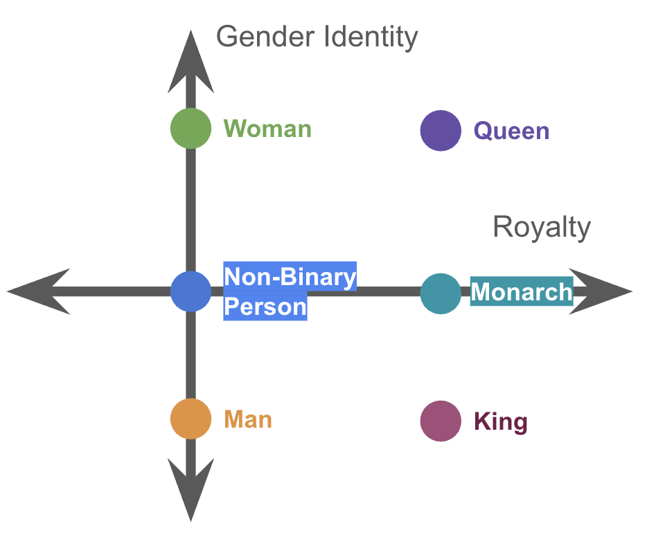
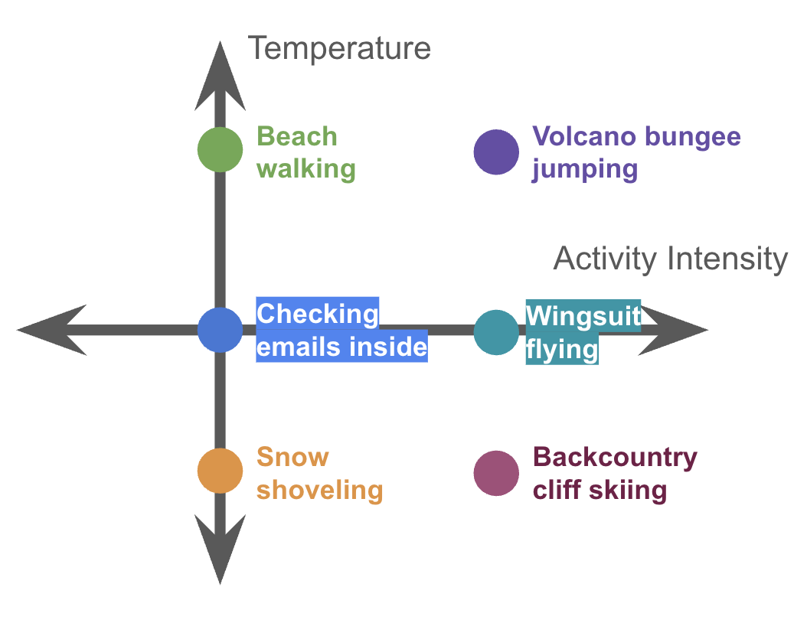
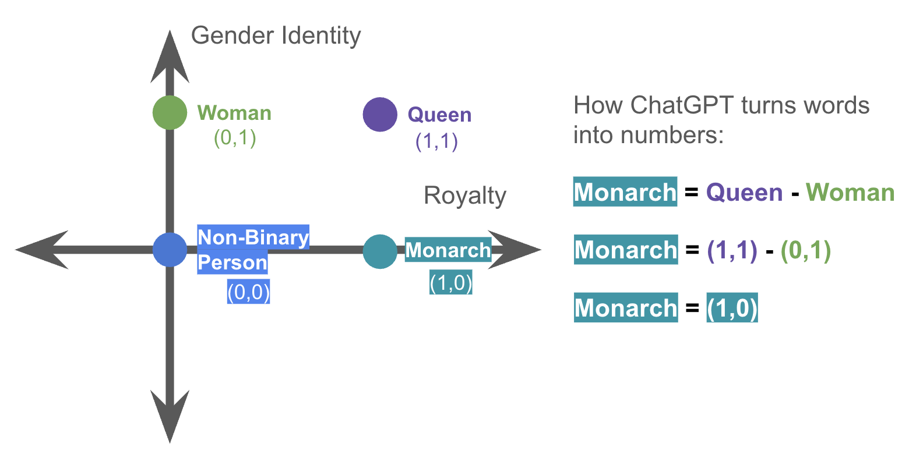

This topic is normally only taught at the master's degree level. But I'm sure you can learn it!
Click and drag to rotate the paraboloid!
Yes! The world is messy and we can't just plug stuff into equations. As we have a bunch of data, we can't rely on the quadratic formula, completing the square, etc. I mean it would be insane to solve quartic equations by hand with this nightmare formula:
So what in the world do we do? We use computers!

Spoiler for Q10: Computers can think like someone standing at the edge of a paraboloid, and make small steps downward until it knows the slope is flat. Remember that line we drew through the vertex of the parabola from Q4? Computers can figure that out, but in 3D too.
Computers really just make a bunch of educated guesses until it gets close enough to the result we want: the lowest point of the paraboloid.
This is the concept of Gradient Descent, the foundational reason why ChatGPT works!!

You just learned the concept of Stochastic Gradient Descent! This concept is not normally taught until 500-level graduate math classes 😱!
Stochastic is a fancy word for random.
To summarize, adding a bit of random "shakiness" helps computers better approximate to the best "local minimum" compared to going straight down.
Some shakiness is good, but too much causes the marbles to fall out, so we need just the right amount.
In the world of AI, this "shakiness" is referred to as "noise" or "temperature".
Instead of marbles in weird bowl holes, instead picture the depth of the hole as reducing pollution, saving resources, etc.
You think that’s crazy? It’s about to get nuts.



Drag the graph to rotate the 3D space. Move the time slider to watch the same word points organize as the model learns.
P.S.: What we talked about today is exactly why TikTok and Instagram Reels are so addicting and the Oxford Word of the Year is “Rage Bait”. The “marbles at the bottom of the bowl” for social media have to do with watch time, comments, and shares. Outrage and dishonesty is more effective at this than positivity and the full truth.
Thank you so much for listening and participating!!
I am a 24-year-old graduate of Santa Fe Prep and a Bachelor and Master of Science in Computer Science Graduate from Colorado School of Mines. People say I have "golden retriever energy", and I love being physically active. I am an avid weightlifter, trail cyclist, snowboarder, runner, and more. I moved back to Santa Fe to work a remote position as an AI Research Engineer. I was a member of the Alpha Tau Omega fraternity as Philanthropy Chair, and I lived in the frat house basement for two years (at the expense of my GPA). I also love to sing, write, and enjoy long conversations with friends and family.